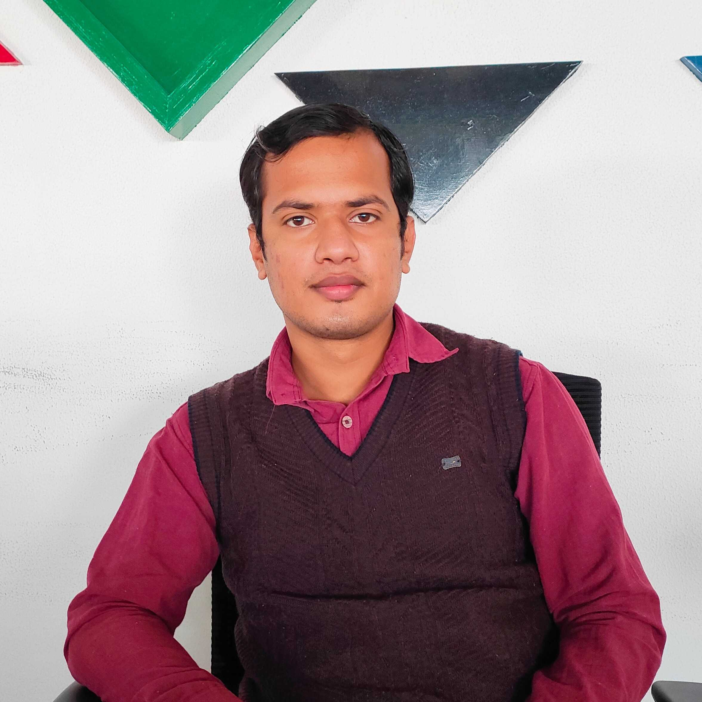

Shubharant Singh Parihar

Summary
Detail-oriented, analytical, and self-driven programmer with 6+ months experience as a software developer trainee at OpenSenselabs eager to leverage a Bachelor of Technology degree in Computer Science and Engineering. Efficient and knowledgeable coder with skills in HTML, CSS, PHP, MySQL, and JavaScript programming languages. Coordinated and collaborative team player with attention to detail, graphic design skills, and the ability to contribute to code base improvement initiatives and UX improvement projects.
Education
Lakshmi Narain College of Technology Excellence, Bhopal (M.P.)
Bachelor of Technology,Computer Science and Engineering (May 2018–May 2022)
Cummulative GPA: 8.63/10/0
Govt. Martand H.S. School Excellence, Rewa (M.P.)
XII (May 2015–May 2016)
Percentage: 77%
Govt. Martand H.S. School Excellence, Rewa (M.P.)
X (May 2013–May 2014)
Percentage: 87.5%
Work Experience
Software developer trainee at Open Sense Labs (July 18, 2022 to January 13, 2023)
Experince Certificate
Projects implemented during training at OpenSense Labs:
-
Delicious (Frontend): An e-blogging platform (August 2022)
I Discuss
Skills: HTML, Material UI, CSS, JavaScript, Event Handling, Transition Effects, Story Book, Bootstrap, Font-Awesome Icon.
- I created the platform using Story Books (to organize the development process, test, and debug individual components), a slick slider installed, the LightBox library (to make the website interactive and appealing), and a bootstrap-based static Figma Baker website to decrease the development time by 50%.
- Utilized improved UX with better exposed filter, upgraded UI with adaptive design, login for backend validation, and frontend validation using an ECMA script.
-
Mobi Rise (Frontend): A Digital Marketing Platform (October 2022)
Shopping Page
Skills: Responsive Design, Event Handling, DOM Manipulation, Bootstrap Carousel, REST API, PHP, MySQL.
- I created the project using bootstrap (button, slider, navbar) to create a responsive and user-friendly design, an awesome font awesome icon, and SAAS, SCSS, and CSS for styling, which helped the project be completed in 7 days.
- Used the Figma file (for design requirements), accordions and image carousel (to improve UI and cut down development time by 25%), and payment gateway using Razor Pay.
Skills
- Technical Skills:
-
OS:Linux, Windows.
-
Programming Essentials:Core Java, OOPs, Debugging, Exception Handling, Clean Coding, PHP, Drupal.
-
Technologies/Framework:Html, Sass, Java Script, Bootstrap, Rest API, Tailwind, Maintain proper visual hierarchy.
-
Database:Mysql.
-
Tools: Git, Postman, and VsCode.
-
Website hosting platform: Git Hub Pages.
- Soft Skills:
- Time Management: Completed the project during training in the allotted time period.
- Creativity: By reading manga and fiction books, I am exploring creativity.
- Problem Solving: I can solve any given problem with available resources.
- Teamwork: I engaged in team-building activities in my last job.
- Communication and Empathy: By communicating with teammates and having empathy in a given situation, I can work efficiently.
- Languages:Fluent in Hindi and English.
Other